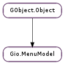

| Subclasses: | Gio.DBusMenuModel, Gio.Menu |
|---|
| get_item_attribute_value(item_index, attribute, expected_type) | |
| get_item_link(item_index, link) | |
| get_n_items() | |
| is_mutable() | |
| items_changed(position, removed, added) | |
| iterate_item_attributes(item_index) | |
| iterate_item_links(item_index) |
None
| Name | Parameters | Return | Description |
|---|---|---|---|
| items-changed | int, int, int | Emitted when a change has occured to the menu. The only changes that can occur to a menu is that items are removed or added. Items may not change (except by being removed and added back in the same location). This signal is capable of describing both of those changes (at the same time). The signal means that starting at the index position, removed items were removed and added items were added in their place. If removed is zero then only items were added. If added is zero then only items were removed. As an example, if the menu contains items a, b, c, d (in that order) and the signal (2, 1, 3) occurs then the new composition of the menu will be a, b, _, _, _, d (with each _ representing some new item). Signal handlers may query the model (particularly the added items) and expect to see the results of the modification that is being reported. The signal is emitted after the modification. |
| Name | Type | Access |
|---|---|---|
| parent_instance | GObject.Object | r |
Bases: GObject.Object
Gio.MenuModel represents the contents of a menu – an ordered list of menu items. The items are associated with actions, which can be activated through them. Items can be grouped in sections, and may have submenus associated with them. Both items and sections usually have some representation data, such as labels or icons. The type of the associated action (ie whether it is stateful, and what kind of state it has) can influence the representation of the item.
The conceptual model of menus in Gio.MenuModel is hierarchical: sections and submenus are again represented by Gio.MenuModels. Menus themselves do not define their own roles. Rather, the role of a particular Gio.MenuModel is defined by the item that references it (or, in the case of the ‘root’ menu, is defined by the context in which it is used).
As an example, consider the visible portions of the menu in .
An example menu
There are 8 “menus” visible in the screenshot: one menubar, two submenus and 5 sections:
illustrates the conceptual connection between these 8 menus. Each large block in the figure represents a menu and the smaller blocks within the large block represent items in that menu. Some items contain references to other menus.
A menu model
Notice that the separators visible in appear nowhere in . This is because separators are not explicitly represented in the menu model. Instead, a separator is inserted between any two non-empty sections of a menu. Section items can have labels just like any other item. In that case, a display system may show a section header instead of a separator.
The motivation for this abstract model of application controls is that modern user interfaces tend to make these controls available outside the application. Examples include global menus, jumplists, dash boards, etc. To support such uses, it is necessary to ‘export’ information about actions and their representation in menus, which is exactly what the Gio.ActionGroup exporter and the Gio.MenuModel exporter do for Gio.ActionGroup and Gio.MenuModel. The client-side counterparts to make use of the exported information are Gio.DBusActionGroup and Gio.DBusMenuModel.
The API of Gio.MenuModel is very generic, with iterators for the attributes and links of an item, see Gio.MenuModel.iterate_item_attributes () and Gio.MenuModel.iterate_item_links (). The ‘standard’ attributes and link types have predefined names: Gio.MENU_ATTRIBUTE_LABEL, Gio.MENU_ATTRIBUTE_ACTION, Gio.MENU_ATTRIBUTE_TARGET, Gio.MENU_LINK_SECTION and Gio.MENU_LINK_SUBMENU.
Items in a Gio.MenuModel represent active controls if they refer to an action that can get activated when the user interacts with the menu item. The reference to the action is encoded by the string id in the Gio.MENU_ATTRIBUTE_ACTION attribute. An action id uniquely identifies an action in an action group. Which action group(s) provide actions depends on the context in which the menu model is used. E.g. when the model is exported as the application menu of a #GtkApplication, actions can be application-wide or window-specific (and thus come from two different action groups). By convention, the application-wide actions have names that start with “app.”, while the names of window-specific actions start with “win.”.
While a wide variety of stateful actions is possible, the following is the minimum that is expected to be supported by all users of exported menu information:
Stateless
A stateless action typically corresponds to an ordinary menu item.
Selecting such a menu item will activate the action (with no parameter).
Boolean State
An action with a boolean state will most typically be used with a “toggle” or “switch” menu item. The state can be set directly, but activating the action (with no parameter) results in the state being toggled.
Selecting a toggle menu item will activate the action. The menu item should be rendered as “checked” when the state is true.
String Parameter and State
Actions with string parameters and state will most typically be used to represent an enumerated choice over the items available for a group of radio menu items. Activating the action with a string parameter is equivalent to setting that parameter as the state.
Radio menu items, in addition to being associated with the action, will have a target value. Selecting that menu item will result in activation of the action with the target value as the parameter. The menu item should be rendered as “selected” when the state of the action is equal to the target value of the menu item.
| Parameters: |
|
|---|---|
| Returns: | the value of the attribute |
| Return type: |
Queries the item at position item_index in model for the attribute specified by attribute.
If expected_type is non-None then it specifies the expected type of the attribute. If it is None then any type will be accepted.
If the attribute exists and matches expected_type (or if the expected type is unspecified) then the value is returned.
If the attribute does not exist, or does not match the expected type then None is returned.
| Parameters: | |
|---|---|
| Returns: | the linked Gio.MenuModel, or None |
| Return type: |
Queries the item at position item_index in model for the link specified by link.
If the link exists, the linked Gio.MenuModel is returned. If the link does not exist, None is returned.
| Returns: | True if the model is mutable (ie: “items-changed” may be emitted). |
|---|---|
| Return type: | bool |
Queries if model is mutable.
An immutable Gio.MenuModel will never emit the Gio.MenuModel ::items-changed signal. Consumers of the model may make optimisations accordingly.
| Parameters: |
|---|
Requests emission of the Gio.MenuModel ::items-changed signal on model.
This function should never be called except by Gio.MenuModel subclasses. Any other calls to this function will very likely lead to a violation of the interface of the model.
The implementation should update its internal representation of the menu before emitting the signal. The implementation should further expect to receive queries about the new state of the menu (and particularly added menu items) while signal handlers are running.
The implementation must dispatch this call directly from a mainloop entry and not in response to calls – particularly those from the Gio.MenuModel API. Said another way: the menu must not change while user code is running without returning to the mainloop.
| Parameters: | item_index (int) – the index of the item |
|---|---|
| Returns: | a new Gio.MenuAttributeIter |
| Return type: | Gio.MenuAttributeIter |
Creates a Gio.MenuAttributeIter to iterate over the attributes of the item at position item_index in model.
You must free the iterator with GObject.Object.unref () when you are done.
| Parameters: | item_index (int) – the index of the item |
|---|---|
| Returns: | a new Gio.MenuLinkIter |
| Return type: | Gio.MenuLinkIter |
Creates a Gio.MenuLinkIter to iterate over the links of the item at position item_index in model.
You must free the iterator with GObject.Object.unref () when you are done.